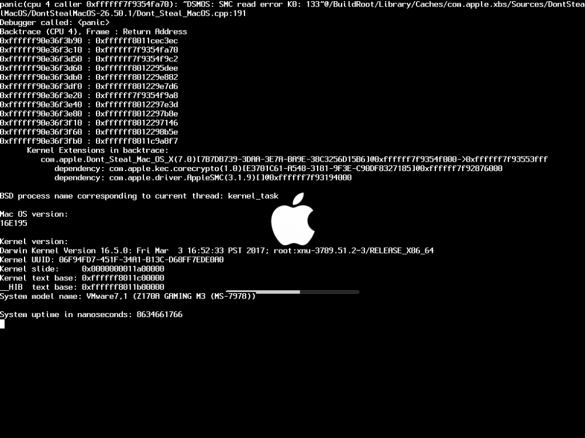

Apple XNU Kernel segment overflow
April, 2019
Introduction
KernelTextRegion read-only is a security mitigation done by Apple to prevent patches to the kernel's critical parts.
It protects the kernel's __TEXT segment where crucial parts, such as pagetables are located and also prevents system register access to fake pages.
Well-known iOS hacker S1guza analyzed this mitigation a while ago and sadly I had to conclude that Apple did a great job with this mitigation to make it harder for people to bootstrap a secondary bootchain (kloader64) or create an extensive kernel debugger.
However, as s1guza described in his write-up initialization flaws may lead to compromising the kernel text region before it is locked as read-only.
In short, the kernel firstly starts building pagetables and then gives the entries segmentation with access rights.
These access rights define whether the segment is readable, writeable, executable a combination of these rights or completely inaccessible.
We know that accessing invalid memory or with improper access rights will result in a pagefault which the kernel will solve with a panic.
We thus have two ways to attack the kernel's initialization:
- By exploiting it to such an extend that we can modify the segmentation rights
- By exploiting it to such an extend that we can craft fake pages.
- By exploiting it to such an extend that the MMU is turned off, but thats going to be hard and unlikely.
We also know that XNU source code is publicly available and therefore we can pursuit two strategies to find a flaw suitable for one of the conditions above.
We can either use American Fuzzy Lop or another fuzzer to fuzz the initialization or manually do static analysis on the kernel.
Compiling XNU with AFL and then fuzzing it is going to be a massive time-loss.
The question is if fuzzing will be a good idea at initialization stage because it is really a low-level close to hardware.
Therefore I decided to go for static analysis.
We know that the kernel holds one segment that is widely controllable to a certain extend: The stack.
We also know that the stack must be initialized at some point during initialization.
Therefore I decided to look at options to interact with stack initialization.
Surprisingly I found an amazing flaw in the initialization that is easier to trigger than I could ever think.
Hypothese
...
Results
A segment overflow exists in XNU early boot initialization as one can pass a boot-argument later used to calculate the kernel stack size.
However, this boot-argument is only treated by the bootloader on environments that have a less restrictive boot process.
Conclusion
...